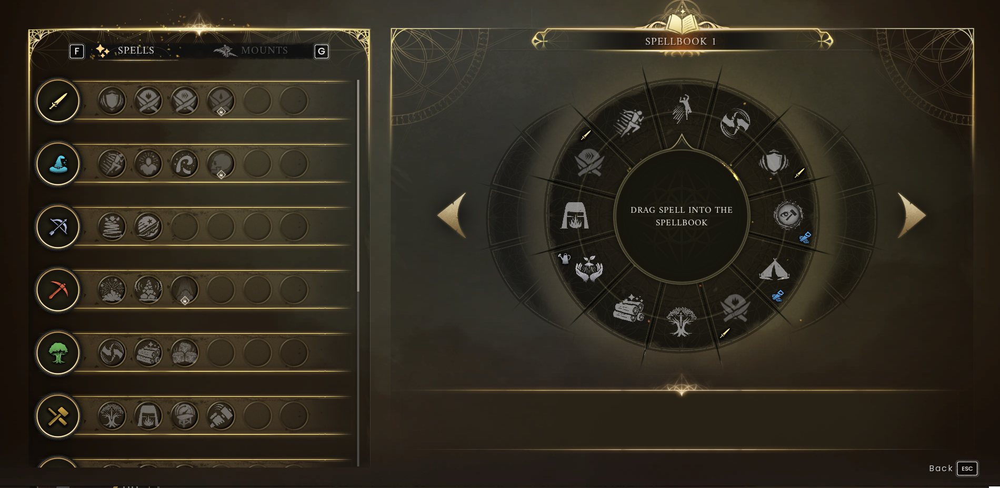

Magic & the spellbook
Use RuneScape’s sorcery to support exploration, gathering and combat.
On this page
Controls for this walkthrough
Interact E · Inventory Tab · Map M / J · Build B
Full controls and menu navigation · * marks a controller-equivalent mapping; the in-game prompt takes priority.
Three things you need
A skill spell needs to be unlocked, assigned and supplied with the right runes. Rune essence is a material; runes are the items spells consume. A locked spell is a progression issue, while an unlocked spell that will not cast may be missing runes or still on cooldown.
- Open the Spellbook with P on the default keyboard layout.
- Inspect the spell: read its effect, rune costs and cooldown.
- Put it into a slot on the spell wheel.
- Open the wheel with Q, select the spell and follow the targeting prompt.


How you unlock spells
Zanik introduces the Spellbook in the tutorial. You can also gain access by reaching your first skill-spell unlock through training. Skills other than Magic can unlock utility spells, so a melee fighter can still benefit from learning sorcery.
Useful priorities depend on your job. A regular gatherer can look for gathering abilities; an explorer may favour movement and return options. Read the description before spending runes on an unfamiliar effect.
Why will my spell not cast?
| Check | What to do |
|---|---|
| Locked icon | Inspect the skill milestone that unlocks it. |
| Missing runes | Compare the exact rune types and quantities, not just your total rune count. |
| Unassigned spell | Put it on the wheel before trying to select it. |
| Cooldown | Wait for the timer to finish. |
| Invalid target | Aim at a valid object or location and follow the prompt. |
| No safe opening | Move away from enemies before testing the spell. |
Use magic responsibly at camp
Practise area effects away from buildings, planted trees and other players. Ask before using destructive gathering abilities near the village. Keep spare runes in your own storage and tell the team if you are using a communal supply.
Further reading
For exact requirements, detailed walkthroughs and more depth, visit the topic pages below.
Wiki adaptations and data: RuneScape: Dragonwilds Wiki contributors, CC BY-NC-SA 3.0. See credits for source dates.